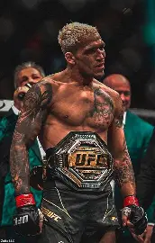
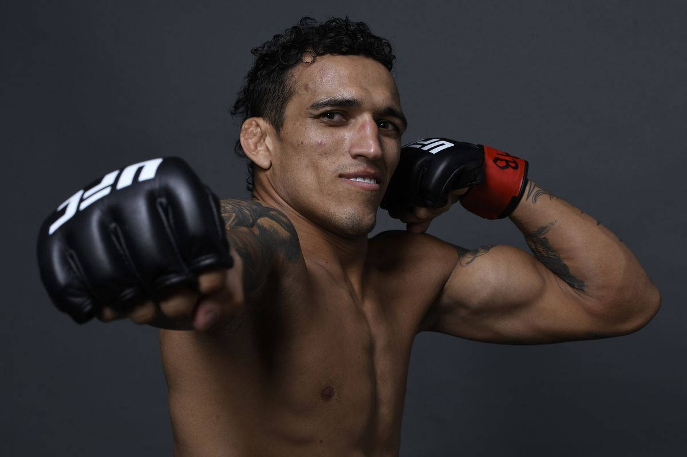
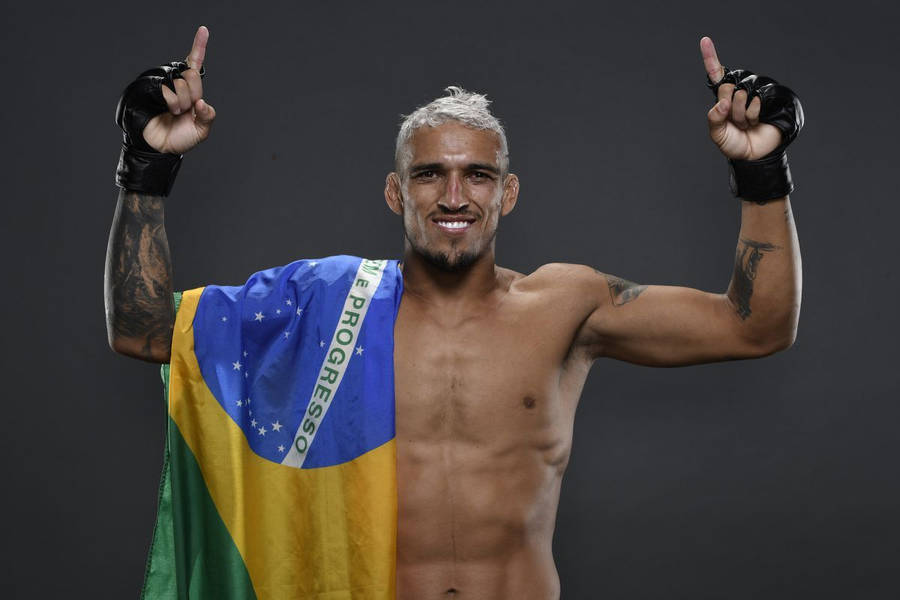
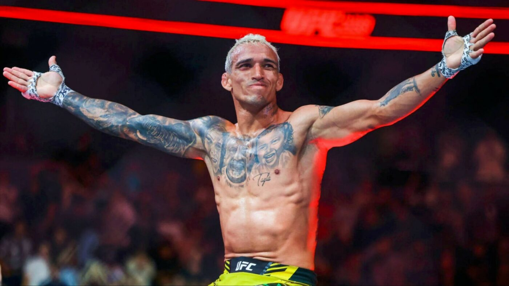
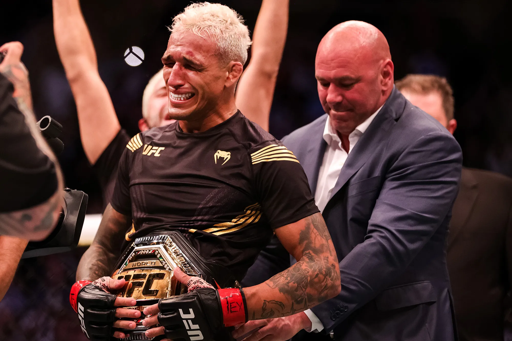

Historia

Charles Oliveira da Silva, nacido el 17 de octubre de 1989 en Guarujá, São Paulo, Brasil, es un
luchador de artes marciales mixtas conocido mundialmente como “Do Bronx”. Desde joven
enfrentó problemas de salud que casi le impidieron practicar deportes, pero gracias al apoyo de su
familia y su dedicación logró recuperarse y entrenar en jiu-jitsu brasileño, disciplina en la que
alcanzó el cinturón negro de cuarto grado.
Debutó profesionalmente en 2008 y rápidamente llamó la atención por su estilo agresivo y técnico.
En 2010 ingresó a la UFC, donde en su primera pelea sometió a Darren Elkins en apenas 41
segundos. A lo largo de su carrera se consolidó como uno de los peleadores más peligrosos de la
división ligera, acumulando récords históricos de mayor número de sumisiones y finalizaciones
en la UFC.
El punto culminante de su trayectoria llegó en mayo de 2021, cuando derrotó a Michael Chandler
por nocaut técnico en el segundo asalto de UFC 262, conquistando el título mundial de peso ligero.
Defendió exitosamente el cinturón frente a Dustin Poirier y Justin Gaethje, demostrando su
capacidad para imponerse ante los mejores contendientes. Aunque perdió el campeonato en 2022,
Oliveira se mantuvo en la élite de la división y sigue siendo considerado uno de los peleadores más
completos y emocionantes de la organización.
Su historia es un ejemplo de superación: de un niño con problemas de salud en Brasil a convertirse
en campeón mundial y referente del MMA, admirado por su humildad, carisma y espíritu
competitivo.
Información
Logros/Premios:
- Campeón interino de peso ligero de la UFC (2020).
- Campeón de peso ligero de la UFC (2021-2022).
- Campeón de jiu-jitsu brasileño en torneos nacionales.
- Cinturón negro de cuarto grado en jiu-jitsu brasileño.
- Premios de rendimiento en la UFC (Performance of the night, Fight of the night, Submmission Of the night).
Momentos épicos/icónicos:
- Victoria sobre Michael Chandler (UFC 262, 2021).
- Defensa del título contra Dustin Poirier (UFC 269, 2021).
- Victoria sobre Justin Gaethje (UFC 274, 2022).
Ficha técnica
| Edad | 36 años | 1989 |
|---|---|---|
| Peso | 70 kg | 155 lb |
| Estatura | 1.78 m | 5 pies 10 pulgadas |
| Inicio de Carrera | 2003 (Jiu-jitsu) | 2008 (MMA) |
| Curiosidades | Es campeón mundial en "carreras de caballo" | Ha estado en 3 categorías de peso (Pluma, ligero y wélter). |
| Nombre Real | Charles Oliveira Da Silva | "Do bronx" (Apodo) |
Registro de fans
Galería



